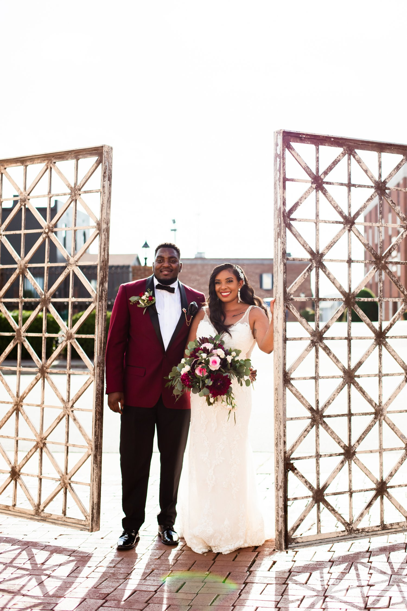
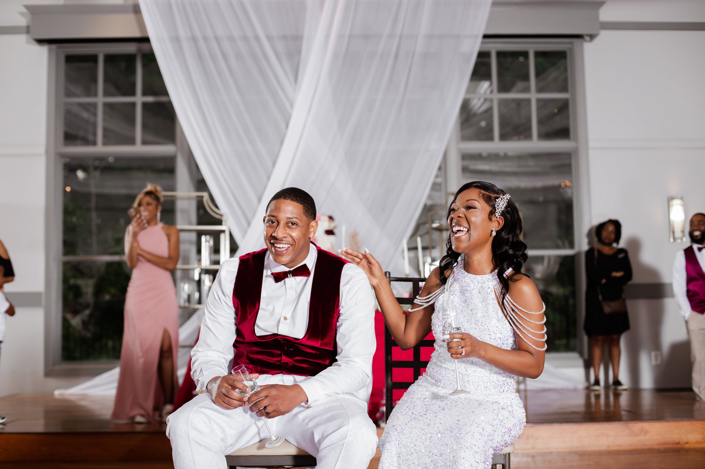

The Wedding Experience
Investments begin at $2200
How It Works
Schedule a discovery call
During our first discovery call, we will get to know each other, and you get to share your personal love story. This is the time when you get to pick my brain bout everything that I can do for you as your wedding photographer. Most importantly, this is our opportunity to make sure we are a great fit for each other.
Through my experience, I’ve learned that early preparation is best, and to be honest there’s no such thing as too early. I recommend we discuss the photography for your wedding at a minimum six to eight months prior to your special day to ensure that together we have determined the expectations for the day.
Recieve your online proposal
After our intital call you will receive an email with information to reserve your wedding photography services. This includes your service contract, wedding day questionnaire and a link to pay your deposit. There’s no rush to make a decision however perspective dates can not be reserved without a deposit. During this time be sure to ask as many questions as possible to ensure you understand what the expectations as a client, and my obligation to you.
Soon after you have confirmed your date by paying your deposit and signing your service agreement, you will receive a welcome packet in the mail. The packet will go into detail about the many specifics of how I will execute my services for the day. The packet also includes several wedding day tips for you and your future partner to ensure you guys are photo ready.
How It Works
Let's start planning
During the few months before your wedding, we will meet via zoom or in person, if possible, to discuss details and go over your wedding day questionnaire. Within these months, you may receive several questionnaires from me so that I can create a photo timeline that aligns with the wedding day schedule. Additionally, during one of the scheduled meetings, we will go over your wedding photo timeline for the day so that I can explain how I will utilize my time. My goal is to use gather all of the information we discussed to photograph the day authentically.
After several months of planning, we will finally be ready to celebrate. It is always my goal to capture your day to the best of my ability using my experience and skills to execute your vision.